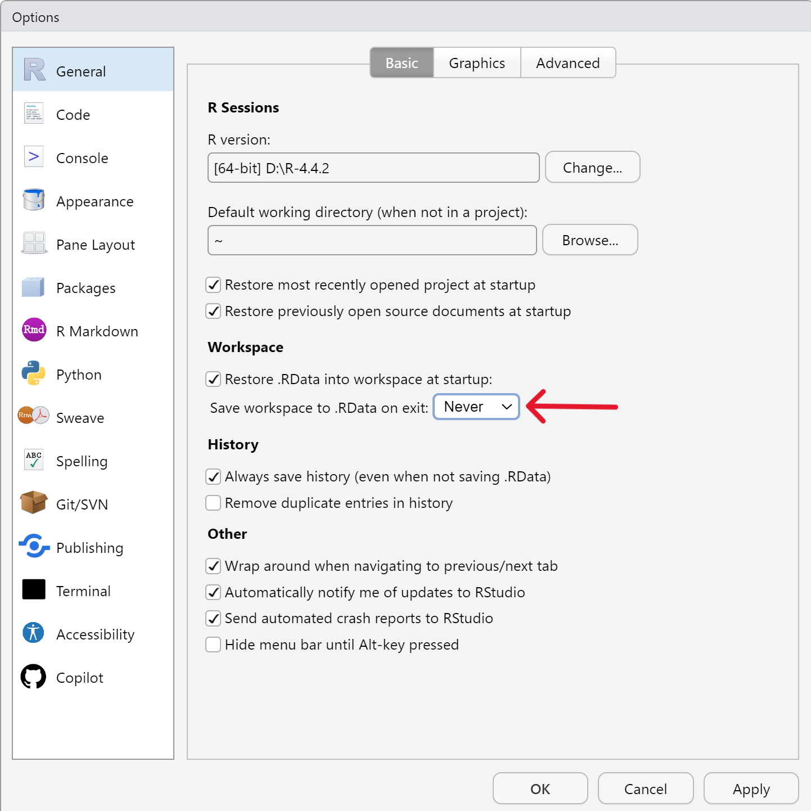
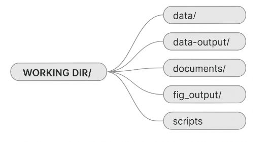
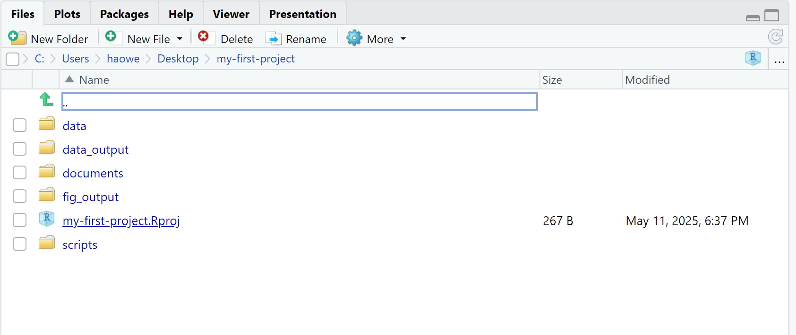
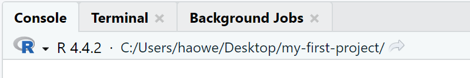
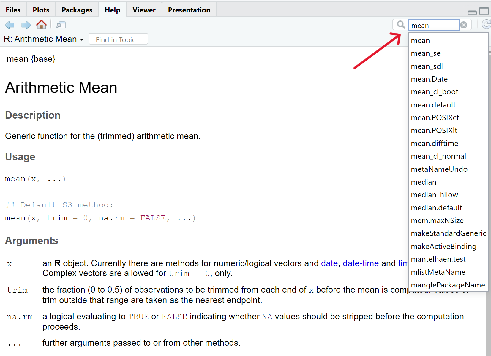

?barplotGetting Started
What is R?

R is a free software environment for statistical computing, data visualization, and data analysis. It is widely used in academic research, public health, and industry. It allows you to work with data and create plots, statistical models, and even simulations.
Why learn R?
R does not involve lots of pointing and clicking
The learning curve might be steeper than with other software, but with R, the results of your analysis do not rely on remembering a succession of pointing and clicking, but instead on a series of written commands, and that’s a good thing!
So, if you want to redo your analysis because you collected more data, you don’t have to remember which button you clicked in which order to obtain your results; you just have to run your script again.
Working with scripts makes the steps you used in your analysis clear, and the code you write can be inspected by someone else who can give you feedback and spot mistakes.
Working with scripts also forces you to have a deeper understanding of what you are doing, and facilitates your learning and comprehension of the methods you use.
R code is great for reproducibility
Reproducibility is when someone else (including your future self) can obtain the same results from the same dataset when using the same analysis.
R integrates with other tools to generate reports from your code. If you collect more data, or fix a mistake in your dataset, the figures and the statistical tests in your manuscript are updated automatically after running the code again.
An increasing number of journals and funding agencies expect analyses to be reproducible, so knowing R will give you an edge with these requirements.
R is interdisciplinary and extensible
With 10,000+ packages that can be installed to extend its capabilities, R provides a framework that allows you to combine statistical approaches from many scientific disciplines to best suit the analytical framework you need to analyze your data.
For instance, R has packages for image analysis, GIS, time series, population genetics, and a lot more.
R works on data of different sizes
The skills you learn with R scale easily with the size of your dataset. Whether your dataset has hundreds or millions of lines, it won’t make much difference to you.
R is designed for data analysis. It comes with special data structures and data types that make handling of missing data and statistical factors convenient.
R can connect to spreadsheets, databases, and many other data formats, on your computer or on the web.
R produces high-quality graphics
The plotting functionalities in R are endless, and allow you to adjust any aspect of your graph to convey most effectively the message from your data.
R has a large and welcoming community
Thousands of people use R daily. Many of them are willing to help you through mailing lists and websites such as Stack Overflow, or on the RStudio Community.
Not only is R free, but it is also open-source and cross-platform
Anyone can inspect the source code to see how R works. Because of this transparency, there is less chance for mistakes, and if you (or someone else) find some, you can report and fix bugs.
What is RStudio?
RStudio is currently a very popular Integrated Development Environment (IDE) for working with R. An IDE is an application used by software developers that facilitates programming by offering source code editing, building and debugging tools all integrated into one application. To function correctly, RStudio needs R and therefore both need to be installed on your computer.
The RStudio Desktop open-source product is free under the Affero General Public License (AGPL) v3. Other versions of RStudio are also available.
We will use RStudio IDE to write code, navigate the files on our computer, inspect the variables we are going to create, and visualize the plots we will generate. RStudio can also be used for other things (e.g., version control, developing packages, writing Shiny apps) that we will not cover during the workshop.
RStudio interface screenshot. Clockwise from top left: Source, Environment/History, Files/Plots/Packages/Help/Viewer, Console.
RStudio is divided into 4 “Panes”:
- the Source for your scripts and documents (top-left),
- your Environment/History (top-right),
- your Files/Plots/Packages/Help/Viewer (bottom-right),
- and the Console (bottom-left).
The layout can be customized from Tools → Global Options → Pane Layout.
One of the advantages of using RStudio is that all the information you need to write code is available in a single window. Additionally, with many shortcuts, autocompletion, and highlighting for the major file types you use while developing in R, RStudio will make typing easier and less error-prone.
Create an R Project
Before starting to write code in RStudio, we need to create an R Project. An R Project is a workspace where you can keep all files and settings associated with a project. It makes resuming work easier.
To create an “R Project”:
- Start RStudio.
- Under the
Filemenu, clickNew Project. ChooseNew Directory, thenNew Project. - Enter a name and choose a convenient location. This will be your working directory.
- Click on
Create Project. - (Optional) Set preferences to “Never” save workspace in RStudio.
RStudio’s default preferences generally work well, but saving a workspace to .RData can be cumbersome, especially if you are working with larger datasets as this would save all the data that is loaded into R into the .RData file.
To turn it off, go to: Tools → Global Options → General and select the ‘Never’ option for Save workspace to .RData on exit.

Working directory
Whenever we are working on a project, it is good practice to keep a set of related data, analyses, and text self-contained in a single folder, called the working directory.
Using a consistent folder structure across your projects will help keep things organized, and will also make it easy to find things in the future. This can be especially helpful when you have multiple projects. In general, you may create directories (folders) for scripts, data, and documents.
data/
Use this folder to store your raw data. For the sake of transparency and provenance, you should always keep a copy of your raw data accessible and do as much of your data cleanup and preprocessing programmatically (i.e., with scripts, rather than manually).
Separating raw data from processed data is also a good idea. For example, you could have filesdata/raw/survey.plot1.txtanddata/raw/survey.plot2.txtkept separate from adata_output/survey.csvfile generated by thescripts/01.preprocess.survey.Rscript.documents/
This would be a place to keep documentation and other text documents.scripts/
This would be the location to keep your R scripts for different analyses or plotting.

You may want additional directories or subdirectories depending on your project needs, but these should form the backbone of your working directory.
Example of a working directory structure
For this workshop, we will need a data/ folder to store our raw data, and we will use data_output/ for when we learn how to export data as CSV files, and fig_output/ folder for the figures that we will save.
- Under the Files tab on the right of the screen, click on New Folder and create a folder named
datawithin your newly created working directory (e.g.,~/my-first-project/data).
Repeat these operations to create adata_output/and afig_outputfolder.
We are going to keep the script in the root of our working directory because we are only going to use one file and it will make things easier.
Your working directory should now look like this:

Absolute vs Relative paths
The working directory is an important concept to understand. It is the place from where R will be looking for and saving the files. When you write code for your project, it should refer to files in relation to the root of your working directory and only need files within this structure.
All of the scripts within this folder can then use relative paths to files in the working directory that indicate where inside the project a file is located (as opposed to absolute paths, which point to where a file is on a specific computer). Working this way makes it a lot easier to move your project around on your computer and share it with others without worrying about whether or not the underlying scripts will still work.
Absolute vs Relative paths examples
Relative path: data/dataset1.txt
Absolute path: C:/Users/User1/Documents/R/my-first-project/data/dataset1.txt
Using RStudio projects makes it easy to organise your files in the project and ensures that your working directory is set properly. RStudio shows your current working directory at the top of the console.

Checking your working directory
Another way to check your working directory is by typing getwd() in the console pane.
If for some reason your working directory is not what it should be, you can change it in the RStudio interface by navigating in the file browser where your working directory should be, and clicking on the blue gear icon More, and select Set As Working Directory.
Alternatively, you can use setwd("/path/to/working/directory") to reset your working directory (not recommended). However, your scripts should not include this line because it will fail on someone else’s computer.
Interacting with R
The basis of programming is that we write down instructions for the computer to follow, and then we tell the computer to follow those instructions. We write, or code, instructions in R because it is a common language that both the computer and we can understand. We call the instructions commands and we tell the computer to follow the instructions by executing (also called running) those commands.
There are two main ways of interacting with R:
- using the console
- using script files (plain text files that contain your code)
The console pane (bottom left in RStudio) is where commands typed in R are executed immediately. You can type commands directly into the console and press Enter to execute them — but they will be forgotten when you close the session.
It is better to type the commands we want in the script editor, and save the script. This way, there is a complete record of what we did, and anyone (including our future selves!) can easily replicate the results.
RStudio allows you to execute commands directly from the script editor by using the keyboard shortcut:
Ctrl + Enter(on Mac:Cmd + Return)
The current line or all selected lines will be sent to the console and executed.
You can find more shortcuts in this RStudio cheatsheet about the RStudio IDE.
To check a variable or an object without saving it in your script, type the command directly in the console.
Ctrl + 1andCtrl + 2can be used to jump between the script and console panes.
When R is ready to accept a command, the console shows a > prompt. After running a command, it will return to > when ready.
If you see a + prompt, it means R is still waiting for you to finish the command (e.g., due to an unclosed parenthesis or quote). You can press Esc to cancel the incomplete command.
How to learn more after the workshop?
The material we cover during this workshop will give you an initial taste of how you can use R to analyze data for your own research. However, you will need to learn more to do advanced operations such as cleaning your dataset, using statistical methods, or creating beautiful graphics.
The best way to become proficient and efficient at R, as with any other tool, is to use it to address your actual research questions.
As a beginner, it can feel daunting to write a script from scratch. Many people make their code available online, and modifying existing code to suit your purpose might make it easier for you to get started.
Seeking help
Use the built-in RStudio help interface to search for more information on R functions
One of the fastest ways to get help is to use the RStudio help interface. This panel can be found at the lower right-hand panel of RStudio.
By typing a keyword (e.g., "Mean"), RStudio will suggest relevant functions and display help files.

I know the name of the function I want to use, but I’m not sure how to use it:
If you need help with a specific function, such as barplot(), you can type:
If you just need to remind yourself of the names of the arguments in the function, you can use:
args(lm)I want to use a function that does X, there must be a function for it but I don’t know which one:
If you are looking for a function to do a particular task, you can use the help.search() function, which is called by the double question mark ??. However, this only looks through the installed packages for help pages with a match to your search request.
??kruskalIf you still can’t find what you’re looking for, try:
- https://rdocumentation.org
- A Google search for “R, <description of error/error message>” often returns helpful documentation or forum answers.
I am stuck… I get an error message that I don’t understand
Start by googling the error message. However, this doesn’t always work very well because often, package developers rely on the error catching provided by R. You end up with general error messages that might not be very helpful to diagnose a problem (e.g. “subscript out of bounds”). If the message is very generic, you might also include the name of the function or package you’re using in your query.
You can also check Stack Overflow.Most questions have already been answered, but the challenge is to use the right words in the search to find the answers:
http://stackoverflow.com/questions/tagged/r
Other helpful resources:
- Introduction to R - can be dense for people with little programming experience but it is a good place to understand the underpinnings of the R language.
- R FAQ is dense and technical but it is full of useful information.
Asking for help
The key to receiving help from someone is for them to rapidly grasp your problem. You should make it as easy as possible to pinpoint where the issue might be.
To get good help, Try to use the correct words to describe your problem clearly. - Avoid ambiguous terms. For example, “package” is not the same as “library”. Most people will understand what you meant, but others have really strong feelings about the difference in meaning. The key point is that it can make things confusing for people trying to help you. Be as precise as possible when describing your problem.
- Use a small reproducible example. Don’t send 50,000 rows of your real data — instead, create a 3-column, 5-row generic example if possible. For more information on how to write a reproducible example see this article by Hadley Wickham.
To share an object with someone else, if it’s relatively small, you can use the function dput(). It will output R code that can be used to recreate the exact same object as the one in memory:
dput(head(iris)) # iris is an example data frame that comes with RIf the object is larger, provide either the raw file (i.e., your CSV file) with your script up to the point of the error (and after removing everything that is not relevant to your issue). Alternatively, in particular if your question is not related to a data frame, you can save any R object to a file with saveRDS():
saveRDS(iris, file = "/tmp/iris.rds")The content of this file is however not human readable and cannot be posted directly on Stack Overflow. Instead, it can be sent to someone by email who can read it with the readRDS() command (here it is assumed that the downloaded file is in a Downloads folder in the user’s home directory):
data <- readRDS(file = "~/Downloads/iris.rds")Last, but certainly not least, always include the output of sessionInfo() for context as it provides critical information about your platform, the versions of R and the packages that you are using, and other information that can be very helpful to understand your problem.
sessionInfo()R version 4.4.1 (2024-06-14 ucrt)
Platform: x86_64-w64-mingw32/x64
Running under: Windows 11 x64 (build 26100)
Matrix products: default
locale:
[1] LC_COLLATE=English_United Kingdom.utf8
[2] LC_CTYPE=English_United Kingdom.utf8
[3] LC_MONETARY=English_United Kingdom.utf8
[4] LC_NUMERIC=C
[5] LC_TIME=English_United Kingdom.utf8
time zone: Europe/London
tzcode source: internal
attached base packages:
[1] stats graphics grDevices utils datasets methods base
loaded via a namespace (and not attached):
[1] htmlwidgets_1.6.4 compiler_4.4.1 fastmap_1.2.0 cli_3.6.3
[5] tools_4.4.1 htmltools_0.5.8.1 rstudioapi_0.16.0 yaml_2.3.8
[9] rmarkdown_2.27 knitr_1.47 jsonlite_1.8.9 xfun_0.45
[13] digest_0.6.36 rlang_1.1.4 evaluate_0.24.0 Where to ask for help?
The person sitting next to you during the workshop. Don’t hesitate to talk to your neighbor during the workshop, compare your answers, and ask for help. You might also be interested in organizing regular meetings following the workshop to keep learning from each other.
Your friendly colleagues: if you know someone with more experience than you, they might be able and willing to help you.
Stack Overflow: if your question hasn’t been answered before and is well crafted, chances are you will get an answer in less than 5 min. Remember to follow their guidelines on how to ask a good question.
The R-help mailing list: it is read by a lot of people (including most of the R core team), a lot of people post to it, but the tone can be pretty dry, and it is not always very welcoming to new users. If your question is valid, you are likely to get an answer very fast but don’t expect that it will come with smiley faces. Also, here more than anywhere else, be sure to use correct vocabulary (otherwise you might get an answer pointing to the misuse of your words rather than answering your question). You will also have more success if your question is about a base function rather than a specific package.
If your question is about a specific package, see if there is a mailing list for it. Usually it’s included in the DESCRIPTION file of the package that can be accessed using
packageDescription("name-of-package"). You may also want to try to email the author of the package directly, or open an issue on the code repository (e.g., GitHub).
There are also some topic-specific mailing lists (GIS, phylogenetics, etc…), the complete list is here.
More resources
The Posting Guide for the R mailing lists.
How to ask for R help useful guidelines
This blog post by Jon Skeet has quite comprehensive advice on how to ask programming questions.
The reprex package is very helpful to create reproducible examples when asking for help. The [rOpenSci community call “How to ask questions so they get answered”], rOpenSci Blog and video recording includes a presentation of the reprex package and of its philosophy.